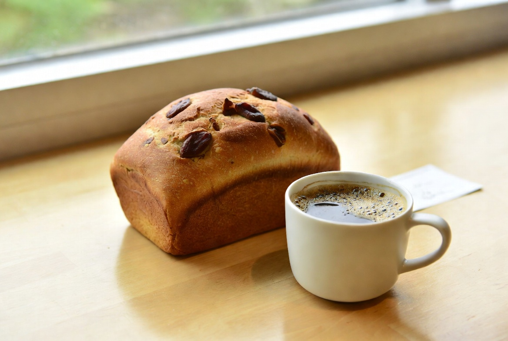

큰 밤만 간격·압착을 바꾼 날
14차에서 신선 밤 중간 크기를 1순위로 잡았습니다. 큰 밤은 향·덩어리감은 좋지만 가장자리 들뜸·갈라짐이 남았습니다. '큰 밤은 버리나?'가 아니라, 쓸 때 어떻게 올리면 덜 실패하나를 볼 차례였습니다.

15차 목표는 반죽·시럽·발효·브러싱·보관을 고정한 채, 큰 밤의 배치 간격과 가벼운 압착만 바꾸는 것입니다. 중간 크기 팬은 대조군으로 한 판 더 구워 나란히 비교했습니다.
2025년 11월 2일 실험입니다. 가을 끝 신선 밤, 실내 19°C 전후. 큰 밤(장경 약 3cm 이상)만 손질해 팬 A에 간격 넓게 + 올리자마자 손끝으로 한 번 가볍게 누름, 팬 B(중간 크기)는 14차와 동일하게 올렸습니다.
14차에서 '한 팬에 크기 섞지 않기'를 지켰으므로, 15차도 큰 밤 단일 등급만 사용했습니다. 발효 숫자는 겨울 58·56분을 쓰지 않고 당일 눌림 기준으로 맞췄습니다 — 재료·배치 변수만 열려야 합니다.
사진용·손님용으로 큰 밤을 쓰고 싶을 때 참고할 메모를 남기려 한 날입니다. 본굽 기본은 중간이 맞다는 전제는 유지합니다.
들뜸이 준 자리, 중간 대조
- 큰 밤 + 넓은 간격·가벼운 압착 — 14차 큰 밤 팬보다 들뜸·떨어지는 조각이 줄음. 다만 가장자리 한두 개는 여전히 약함
- 중간 크기 대조 — 14차와 같이 밀착·한 입 균형이 가장 안정
- 향·덩어리감 — 큰 밤 팬이 한 입에서 더 분명. 가족은 '특별할 때 이 쪽'이라고 함
제 기준으로 15차는 부분 성공 — 큰 밤을 시험·특별 배치로 쓸 수 있는 조건을 찾았고, 본굽 1순위는 여전히 중간입니다.

당일 브러싱 윤기는 두 팬 비슷했습니다. 차이는 토핑 클로즈업에서 큰 밤 가장자리 결합, 다음 날 자를 때 떨어지는지 여부에서 보였습니다.
14차 큰 밤 팬 메모의 '칼질 때 밤이 떨어짐'이 15차 A에서는 한 조각으로 줄었습니다. 완전 해결은 아니지만, 간격·압착이 무의미하지는 않았습니다.
너무 세게 누르면 밤이 으깨지거나 반죽에 파묻혀 형태가 망가졌습니다. '한 번 가볍게'만 허용한 이유입니다.
간격과 가벼운 압착의 역할
간격 ↑ → 들뜸·간섭 ↓ — 부분 확인. 큰 밤끼리 붙어 있으면 팽창 시 가장자리가 뜨기 쉬웠음.
가벼운 압착 → 초기 밀착 — 부분 확인. 시럽만 바르고 올려 두면 접촉면이 부족할 수 있음.
중간 크기 1순위 유지 — 재확인. 배치를 고쳐도 중간 팬이 실패 목록이 가장 짧음.
7차 신선 밤의 향, 14차 선별, 15차 큰 밤 배치가 한 줄로 이어집니다. 재료 챕터는 '무엇을 고르고, 고른 것을 어떻게 올리는가'입니다.
압착을 세게 하면 형태가 깨지므로, 변수는 '세게'가 아니라 '올리는 즉시 한 번'으로 제한했습니다. 2차 발효 직전 압착 실험은 아직 열지 않았습니다.
배치·1회 압착만
고정: 14차 중간 크기 루틴 + 7·8차 고정값. 팬 A만 변경: 큰 밤 + 간격 넓게(조각 사이 여유) + 올린 직후 손끝 1회 가볍게 누름. 팬 B: 중간 크기 14차와 동일.

반죽·굽기 200/190°C 32분·브러싱·루즈 백 동일. 실험일 2025-11-02, 발행 2026-08-03.
간격은 '겹치지 않고, 손가락 한 칸 정도 비움' 정도로 메모했습니다. 자 단위까지는 재지 않았습니다 — 현장 재현을 위해 손 감각 기준을 남겼습니다.
한 팬에 큰·중간을 섞지 않았습니다. 섞으면 14차 교훈이 무너집니다.
보관 미세로 남긴 과제
- 실전 정리에 '중간 1순위 / 큰 밤은 간격·가벼운 압착' 한 줄 반영
- 바로 백 입구 헐거움(10차 잔여) 후보
- 2차 발효 직전 토핑 압착은 아직 보류
15차로 큰 밤을 버릴 필요는 없다는 쪽입니다. 다만 매일 본굽 기본은 중간이 맞습니다.

재료 챕터는 여기서 한 사이클을 닫고, 보관 미세나 다음 시즌 밤으로 넘어갈 수 있습니다.
중간 1순위를 유지한 채 예외만 본 이유
15차는 중간 크기를 폐기하려는 실험이 아닙니다. 14차 1순위를 고정한 채, 예외 처리(큰 밤)만 본 날입니다.
실험은 2025년 11월, 발행은 2026년 8월입니다. 가을 밤 시즌에 다시 읽을 일지입니다.
사진만 보면 큰 밤 팬이 더 화려합니다. 그래서 가족 시식·다음 날 칼질 메모를 같이 남기지 않으면, 판단이 사진 쪽으로 기울기 쉽습니다.
큰 밤 예외 루틴
실험 당일 메모: 2025-11-02, 큰 밤만 A / 중간 B, A는 간격 넓게+가벼운 압착 1회, 8차 브러싱, 루즈 백. 다음 날 들뜸·칼질·한 입.
루틴 한 줄: 본굽=중간 / 큰 밤=간격+살살 누름 / 세게 누르지 않기.
큰 밤 개수를 줄이면 간격 확보가 쉬웠습니다. 같은 팬에 가득 채우면 14차 실패가 다시 나왔습니다.
손끝이 아닌 주걱으로 누르면 힘이 세져 으깨지기 쉬워, 당일은 손끝만 썼습니다.
큰 밤 개수를 중간 팬과 같게 맞추지 말고, 간격을 우선하면 실패가 줄었습니다. 개수보다 배치가 먼저입니다.
다음 날 아침에도 큰 밤 팬을 다시 잘라 보면, 들뜸이 줄어든 자리와 여전히 약한 가장자리가 구분이 됩니다. 그 한 줄을 메모에 남기면 다음 가을에 바로 써먹을 수 있습니다.
큰 밤을 쓰고 싶은 분께
큰 밤을 쓸 때 간격을 어떻게 두시는지 문의로 알려 주세요. 제 15차는 '손가락 한 칸 + 가벼운 1회 압착'이었습니다.
본굽 기본은 14차 중간 크기를 권합니다. 큰 밤은 손님상·사진용 예외로 두면 실패가 줄었습니다.
처음이면 7차·14차·실전 정리를 먼저 보시고, 15차는 큰 밤 예외 처리 일지로 읽으면 됩니다.
15차를 닫으며
15차는 큰 밤의 배치 간격·가벼운 압착만 본 날이었습니다. 들뜸은 14차 큰 밤 팬보다 줄었고, 한 입 덩어리감은 유지됐습니다. 본굽 1순위는 여전히 중간 크기입니다.
재료 챕터: 7차 신선 밤 → 14차 선별 → 15차 큰 밤 예외 처리. 실전 정리에 한 줄 반영합니다.
다음 후보는 백 입구 헐거움 등 보관 미세입니다.
초보자가 자주 실수하는 포인트
- 큰 밤을 가득 채워 간격을 없애기
- 세게 눌러 밤을 으깨기
- 큰 밤 성공을 보고 중간 1순위를 폐기하기
- 크기 선별 없이 배치만 만지기
체크리스트
- 중간 크기 대조 팬 준비
- 큰 밤은 간격 확보
- 올린 직후 손끝 1회만
- 다음 날 들뜸·칼질 확인
자주 묻는 질문
- 15차 이후 본굽도 큰 밤으로 바꾸나요?
- 아닙니다. 본굽 1순위는 14차 중간 크기입니다. 큰 밤은 간격·가벼운 압착을 쓸 때 예외 배치입니다.
- 압착을 얼마나 세게 하나요?
- 손끝으로 한 번 가볍게만 했습니다. 세게 누르면 형태가 깨지거나 반죽에 파묻혔습니다.
이 글은 운영자의 직접 경험을 바탕으로 작성되었으며, 오븐·재료·환경에 따라 결과는 달라질 수 있습니다. 식품 위생·알레르기 등 건강 관련 판단을 대체하지 않습니다.